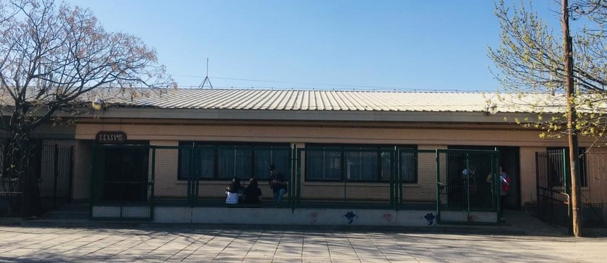
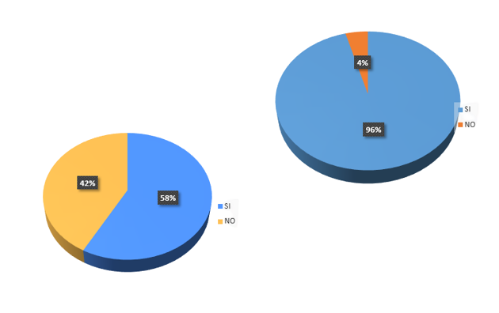

<div>
    <div>
        
        <p class="inicio">
            
            Todos los días observamos en nuestra ciudad y alrededores una gran cantidad de mascotas perdidas, a las
            cuales sus dueños buscan desesperadamente o realizan infinidad de acciones, desde informar la desaparición
            por redes sociales, radio, diario y otros medios de comunicación, hasta salir a recorrer calle por calle
            llamando a sus mascotas con la esperanza de que aparezca, y todo esto en busca de recuperarlos y poder tener
            con ellos a sus compañeros
            <br>
            Al descubrir esto con los alumnos de 6° 1era pudimos observar esta necesidad de las personas y este vacío en
            el mercado e ideamos un producto el cual luego de un arduo trabajo creemos es la solución al problema de la
            gente y nuestro también.
            <br>
            No solamente nos fijamos en esa necesidad, si que a traves de un formulario, pudimos obtener las siguientes
            estadísticas (la izquierda indica las personas que perdieron a su mascota y la derecha indica cuantas personas tienen mascotas).
        </p>
    </div>
</div>